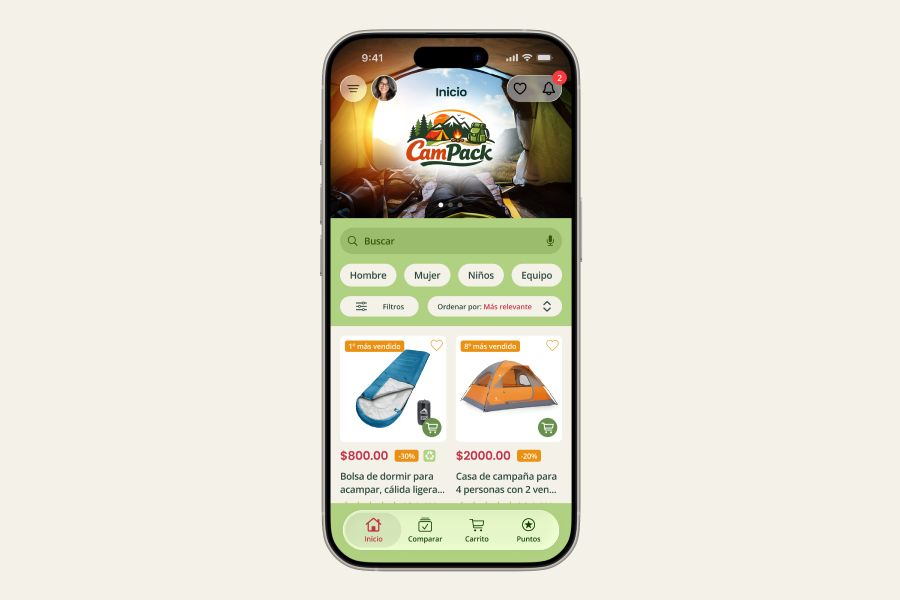

Los usuarios tienen dificultades para identificar y seleccionar productos de camping adecuados a su contexto, lo que genera confusión, abandono de compra y baja confianza en la decisión.
Diseñar una experiencia de búsqueda y selección que reduzca la complejidad, facilite la comparación y ayude a los usuarios a tomar decisiones informadas.
Las necesidades cambian según el tipo de usuario, por lo que un catálogo genérico no responde a la forma en que las personas realmente toman decisiones de compra.
Se identificaron 4 perfiles clave: familias, parejas, grupos y usuarios individuales, cada uno con necesidades distintas en seguridad, portabilidad y uso.
Se diseñó un sistema de filtros adaptado por tipo de usuario para reducir la complejidad en la búsqueda y facilitar la selección de productos relevantes.
Segmentar la experiencia por tipo de usuario en lugar de mantener un catálogo genérico.
Flujo principal: búsqueda → filtrado → comparación → compra
 Ver prototipo baja fidelidad
Ver prototipo baja fidelidad
Se estructuró un flujo claro de búsqueda, filtrado, comparación y compra, priorizando el acceso rápido al buscador, la organización por categorías y el uso de etiquetas y reseñas para apoyar la decisión.
Las pruebas revelaron confusión entre acciones de comparar y comprar, dificultad en el uso de filtros y problemas de navegación. Se simplificaron flujos, se ajustaron etiquetas y se mejoró la estructura de la interfaz.

Ver prototipo alta fidelidadSe rediseñó la navegación, se optimizaron los filtros por tipo de usuario y se priorizó la información clave para reducir la incertidumbre y facilitar la elección.
La solución reduce la complejidad en la búsqueda, mejora la claridad en la selección de productos y facilita la toma de decisiones para distintos tipos de usuario.
Diseñar con base en el contexto real del usuario permite tomar decisiones más precisas. Validar continuamente ayuda a reducir errores y mejorar la claridad de la experiencia.